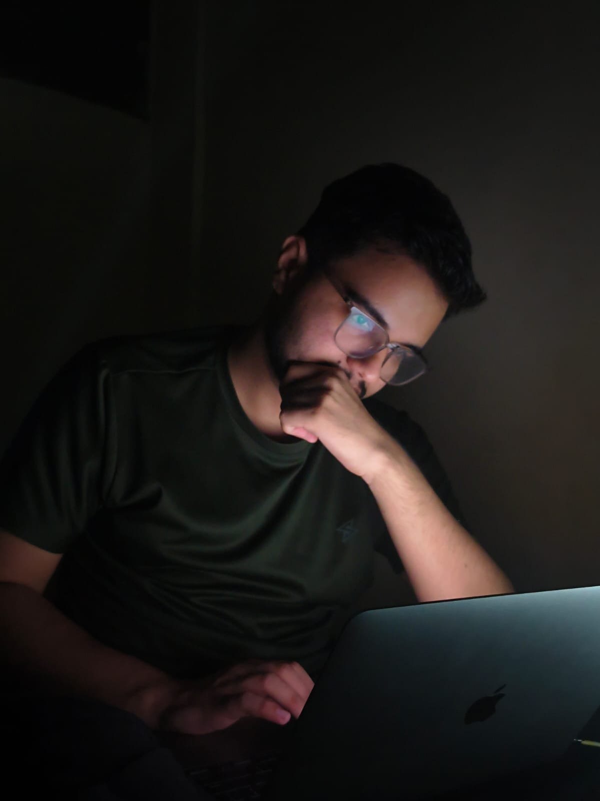
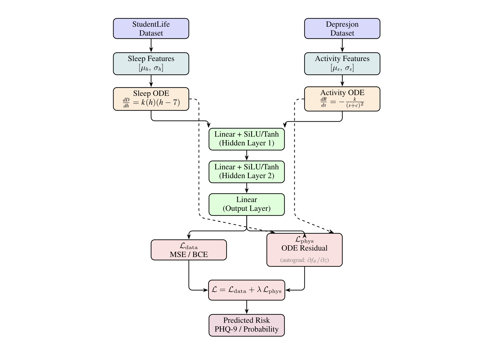
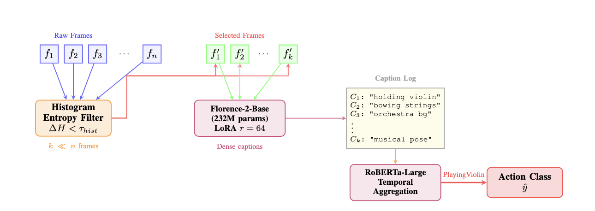
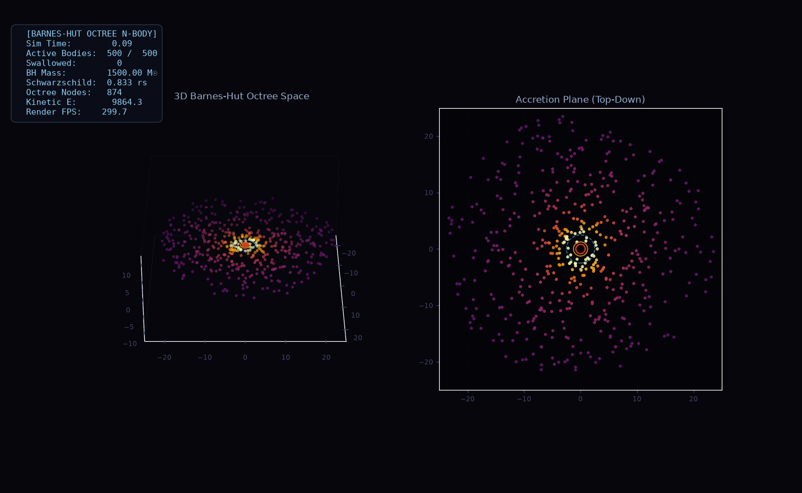
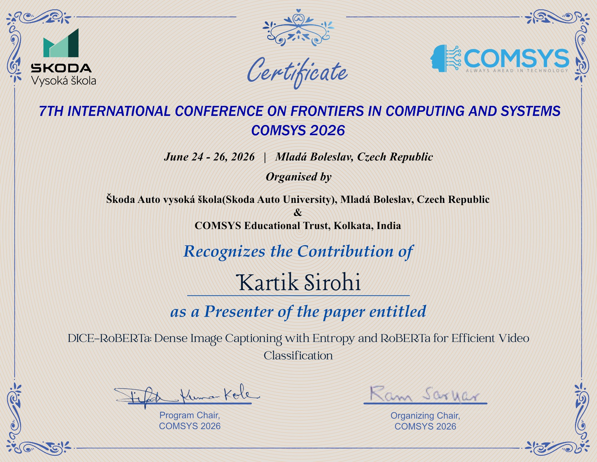
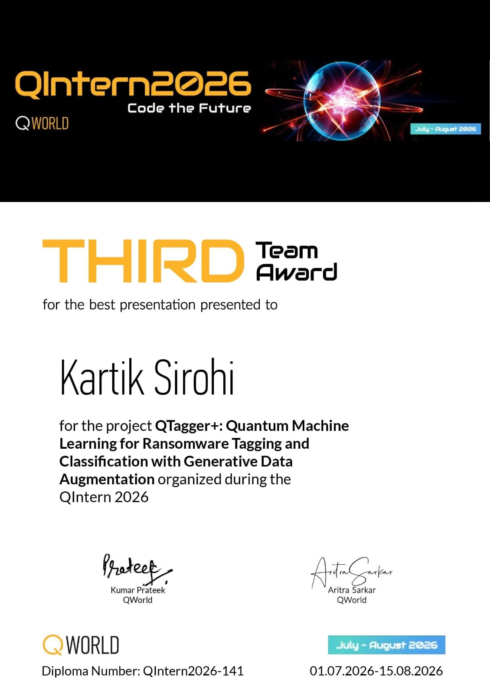

research
experience
open-source
projects
posts
kartik-sirohi
Kartik
Sirohi
IT undergrad at
NIT Jalandhar
· Incoming SWE Intern
@ HSBC
· AI Systems

KS
kartik.orion.dev@gmail.com
github
linkedin
twitter
@@ research @@

P²INNs: Physio-Psychiatry Informed Neural Networks
IEEE Access, 2026
A novel architecture for depression risk prediction integrating physiological and psychiatric indicators. Developed during a research internship at the University of Galway.
ieee xplore
doi

DICE-RoBERTa: Dense Image Captioning with Entropy and RoBERTa for Efficient Video Classification
COMSYS 2026
Accepted & presented at the 7th International Conference on Frontiers in Computing and Systems (COMSYS 2026).
accepted & presented
view certificate ↗

Learning Relativistic Astrophysical Dynamics with Diffusion Models: Representation Scaling and Failure Diagnosis
Preprint
Github
@@ experience @@
e8b2104
Summer 2027
UPCOMING
Software Engineering Intern
@ HSBC
Incoming SWE Intern for Summer 2027.
f3a9c21
Aug 2026 – present
HEAD
AI Engineering Intern
@ Horrazon AI
Reduced Agent Latency by more than 4x
b7e401d
Jul – Aug 2026
Research Intern
@ QWorld
🏆
Best Presentation Award
·
QTagger
1c88ae4
Jan – Mar 2026
AI Research Intern
@ University of Galway
Papers accepted at IEEE Access and Comsys 2026
@@ open source @@
KS
llama.cpp
2
PyTorch
1
OpenSRE
3
alexandria3k
1
SciPy
1
hover or focus a node — 8 merged patches across 5 repositories
llama.cpp
merged
concat row-level memcpy —
#24575
SIMD vector kernel —
#22209
PyTorch
merged
NaN clamp fix —
#172200
OpenSRE
merged
unit tests & validation —
#852
#917
Tempo service tests —
#882
alexandria3k
merged
O(n)→O(1) lookup —
#63
SciPy
merged
Gauss-Jacobi docs —
#23129
@@ projects @@
index / 01–14
tinyGPT
↗
mini-torch
↗
linalg
↗
cuda kernels
↗
Onyx
↗
Barnes-Hut
↗
Rocky
↗
Athena
↗
maze-runner
↗
Cortex
↗
minimax
↗
http-server
↗
FileManager
↗
Q-Toe
↗
click any project for an interactive overview · or hover for quick preview
@@ posts @@
From 44 GFLOP/s to 376 GFLOP/s: Learning GPU Performance Through MatMul
Sep 2026 · Research
Notes on writing and tuning CUDA matmul kernels.
Building tinyGPT in C++
Jul 2026 · Projects
Implementing a 30M-parameter GPT from scratch with NEON, SSE, and OpenMP.
Backpropagation: The Engine of Deep Learning
Jan 2026 · Tutorials
An intuitive walkthrough of backpropagation — from chain rule to automatic differentiation.
Intuition Behind Neural Networks
Oct 2025 · Tutorials
Understanding neural networks one parameter at a time.
Graph Retrieval Methods
Jul 2026 · Research
A survey of why graph retrieval methods are useful for retrieving knowledge.
PROJ / 01
·
SYSTEMS
ESC ×
Project Name
Project description.
View on GitHub ↗
Read Notes ↗
✕

cert.png not found — add the file next to this page.');" />
COMSYS 2026 acceptance certificate — DICE-RoBERTa
✕

cert_qworld.jpg not found.');" />
🏆 QWorld Internship — Best Presentation Award Certificate